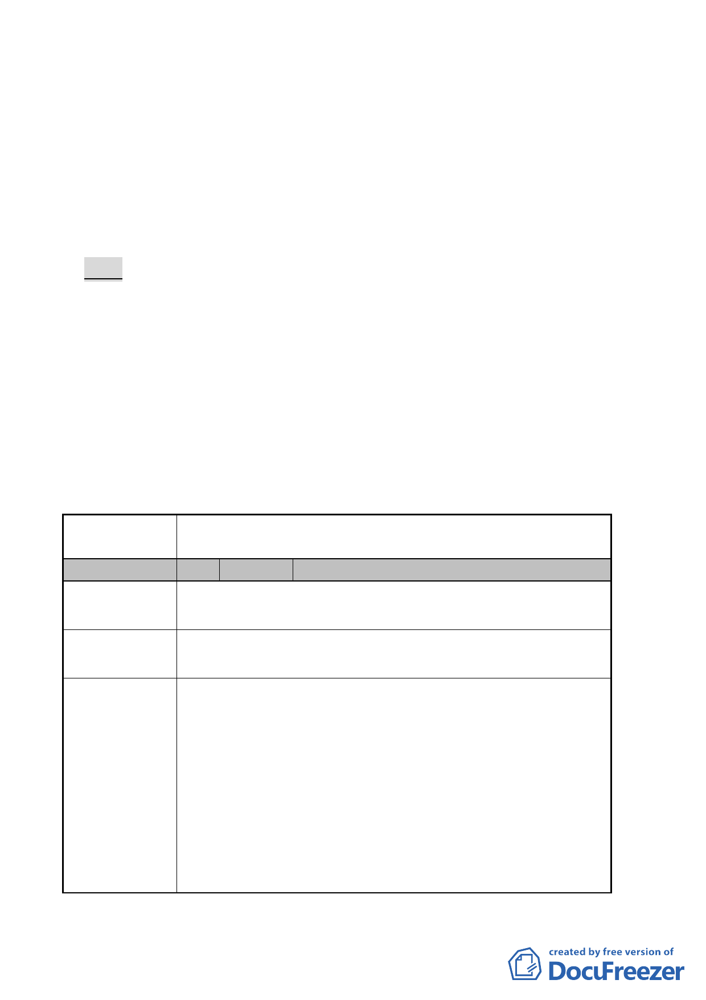

三、本案市府以 98 年 6 月 6 日府都規字第 09831841003 號函送
到會，並公告自 98 年 6 月 8 日起公開展覽 30 天。
四、申請單位：國立臺灣傳統藝術總處籌備處
五、辦理單位：臺北市政府
六、法令依據：都市計畫法第 27 條第 1 項第 4 款。
七、公民或團體所提意見：1 件。
決議：
一、本案原則同意申請單位會中說明，將東側權屬為國有之未開
闢公園用地併同本機關用地整體規劃，建蔽率 45%、容積率
250%，以作為國立臺灣戲劇藝術中心發展腹地。惟該構想
涉及主要計畫變更，故本案退回市府，由申請單位另依程序
辦理變更。
二、公民或團體陳情意見處理詳如綜理表。
臺北市都市計畫委員會 公民或團體陳情意見綜理表
案名
編號
陳情地點
修訂「北投士林科技園區（不含區段徵收及特定專用區範
圍）細部計畫案」內機 2 機關用地土地使用管制案
1 陳情人 寶殿大廈管理委員會
士林區蘭雅段 699 地號
士林區文林路 763 號
陳情理由
建議辦法
1.寶殿大廈與本案機關用地，是否都在士林科技園區公告細
部計畫範圍內？
2.機關用地建蔽率變更為 75％，建物範圍擴大，緊鄰本大廈
涉及遮光、視線、景觀、噪音、通路等問題，請考慮動線
關係，降低衝擊。因本大樓也在尋求改建共識，請提供本
機關用地最新建築設計方位，範圍圖說等以供參考。
3.緊鄰本大樓的安全、棟距、人員出入動線等問題，請說明。
4.管委會循此報備本大樓有海砂屋結構脆弱疑慮情形，該公
共建築興建，於審查期間，請將進度通知本管委會，以維
護社區權益。
-3-